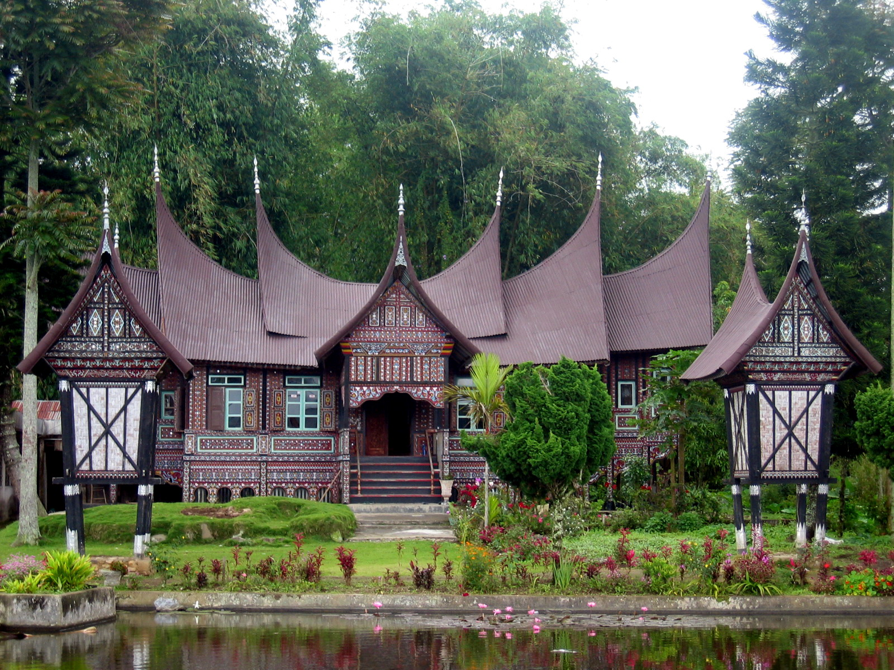
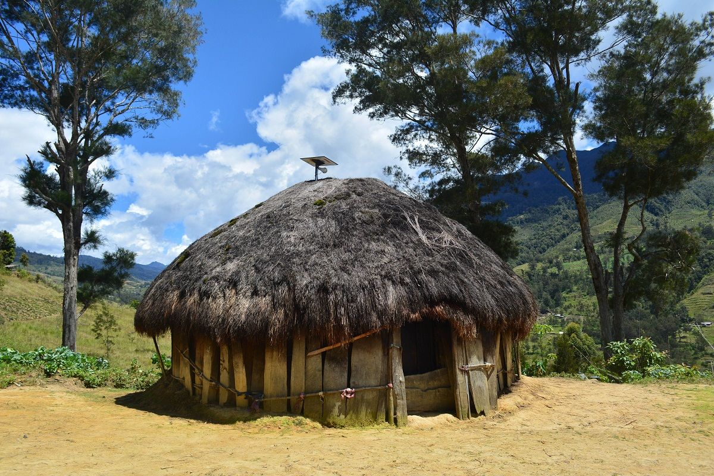
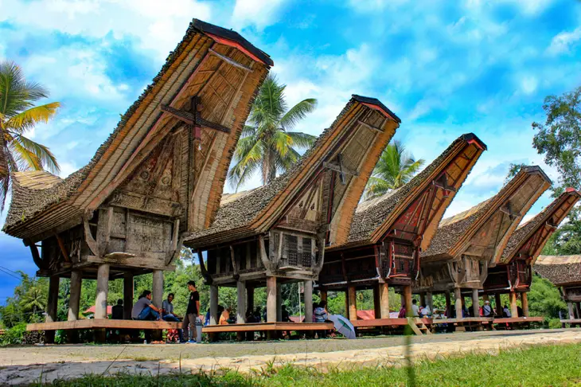

Warisan Arsitektur Indonesia
Kenali lebih dekat keunikan dan sejarah di balik setiap rumah adat dari berbagai penjuru Nusantara.
Galeri Rumah Adat

Rumah Gadang
Sumatera Barat

Rumah Joglo
Jawa Tengah
Rumah Bolon
Sumatera Utara

Rumah Honai
Papua Pegunungan

Rumah Tongkonan
Sulawesi Selatan

Rumah Baileo
Maluku

Rumah Bubungan Tinggi
Kalimantan Selatan
Arsitektur Khas Bali
Bali
Istana Dalam Loka
Nusa Tenggara Barat
Rumah Karo
Sumatera Utara
Rumah Limasan
Jawa Tengah

Rumah Adat Bugis
Sulawesi Selatan